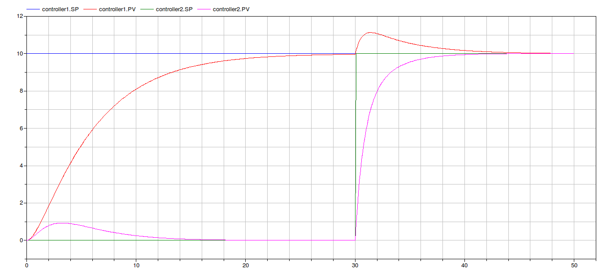
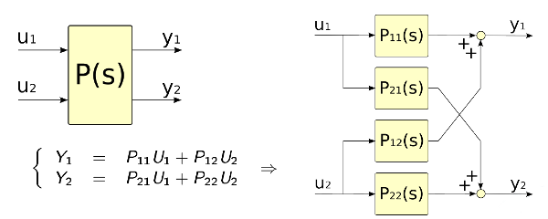
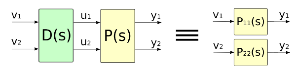

Example of decoupled control
Information
Description
The 2x2 process reported below has to be controlled

The process is controlled using a decoupler and two PIs ( R1(s) and R2(s) ), each one controlling the corresponding output signal.

The goal of the control system is to maintain the output of the processe as close as possible to the set point references,
avoiding the cross effects between the first input and the second output and vice versa.
The package contains two models in which the process has been controlled using the decoupler
(see DecoupledControl )
and not
(see NoDecoupledControl )
Process Variables and set point references without decoupler

Process Variables and set point references with decoupler

The images show how the different control schemes react to the set point changes. The decoupler based scheme performs better than the one without.
Extends from IndustrialControlSystems.Icons.ExamplesPackage (Examples package icon).
Package Content
Two inputs Two outputs process
Y1 = P11*u1 + P12*u2 and Y2 = P21*u1 + P22*u2
Information
Description
Two inputs two outputs process

The four transfer functions are defined via their numerators and denumerators.
Parameters
| Name | Description |
|---|
| P11 |
| P11_num[:] | Transfer function num. |
| P11_den[:] | Transfer function den. |
| P12 |
| P12_num[:] | Transfer function num. |
| P12_den[:] | Transfer function den. |
| P21 |
| P21_num[:] | Transfer function num. |
| P21_den[:] | Transfer function den. |
| P22 |
| P22_num[:] | Transfer function num. |
| P22_den[:] | Transfer function den. |
Connectors
| Name | Description |
|---|
| u1 | input |
| u2 | input |
| y1 | output |
| y2 | output |
Model of the 2x2 decoupler
Information
Description
Decoupler for a two input two output process
(see Process ).
The aim of the decoupler (represented in the following figure) is to reduce (ideally to delete them) the effects of the first
input U1 on the second output Y2 and vice versa.
This can be done introducing the new variables (V1,V2) and placing the decoupler between them and the real process.

The decoupler is described by the following scheme (backward decoupler)

The effect of the decoupler is shown in the following picture where the decoupler with its backward action deletes the relation between V1 and Y2 (the sum of the blue and red paths).

Once the process is known (P11,P21,P21,P22), the decoupler can be specified by the definition of the two rational trasfer functions
P12(s)
------
P11(s)
and
P21(s)
------
P22(s)
N.B. If the transfer functions have more zeroes than poles or have instable poles have to be carefully modified.
Parameters
| Name | Description |
|---|
| P_21_22 |
| P_21_22_num[:] | Transfer function num. |
| P_21_22_den[:] | Transfer function den. |
| P_12_11 |
| P_12_11_num[:] | Transfer function num. |
| P_12_11_den[:] | Transfer function den. |
Connectors
| Name | Description |
|---|
| u1 | input |
| u2 | input |
| y1 | output |
| y2 | output |
| toU1 | output |
| toU2 | output |
Control scheme with decoupler
Information
Description
The 2x2 process reported below has to be controlled
The process is controlled using a decoupler and two PIs ( R1(s) and R2(s) ), each one controlling the corresponding output signal.
The goal of the control system is to maintain the output of the processe as close as possible to the set point references,
avoiding the cross effects between the first input and the second output and vice versa.
Extends from Modelica.Icons.Example (Icon for runnable examples).
Control scheme without decoupler
Information
Description
The 2x2 process reported below has to be controlled
The process is controlled using two PIs ( R1(s) and R2(s) ), each one controlling the corresponding output signal.

The goal of the control system is to maintain the output of the processe as close as possible to the set point references,
avoiding the cross effects between the first input and the second output and vice versa.
Extends from Modelica.Icons.Example (Icon for runnable examples).
Automatically generated Mon May 21 13:34:17 2012.
 IndustrialControlSystems.Applications.ControlProblems.DecoupledControl.DecoupledControl
IndustrialControlSystems.Applications.ControlProblems.DecoupledControl.DecoupledControl